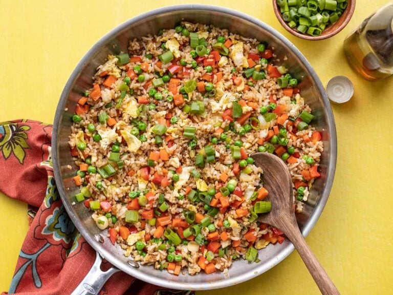

Vegetable Fried Rice

Quick and Easy Vegetable Fried Rice
This recipe is for a quick and simple vegetable fried rice! As for any fried rice dish it is very customizable and any or all ingredients listed below can be replaced with anything found in your fridge. That is the true beauty of fried rice! It is recommended that you use leftover rice as opposed to freshly cooked rice. This is because freshly cooked rice will become mushy when used for fried rice.
Ingredients
- 2 cloves of garlic, minced
- 1 tsp grated fresh ginger
- 1 carrot
- 1 red bell pepper, diced
- 4 green onions, sliced
- 2 large eggs
- 1 cup of frozen eggs
- 3 Tbsp cooking oil
- 3 cups rice
- 3 Tbsp soy sauce
- 1 Tbsp toasted sesame oil
Steps
- Prepare the vegetables before hand so they're ready to go when needed. Mince the garlic, grate the ginger, dice the carrot and bell pepper, slice the green onions (separate the green ends from the white ends), and measure the frozen peas.
- Lightly whisk the eggs in a small bowl. Heat a large skillet over medium. Once hot, add 2 Tbsp of cooking oil and swirl to coat the surface. Add the eggs and gently scramble until cooked through. Transfer the cooked eggs to a clean bowl or plate.
- There should be a good amount of oil left in the skillet. Turn the heat up to medium-high. Add the diced carrots and stir and cook for about two minutes. Next add the bell pepper and the white firm ends of the green onions. Cook and stir for one minute more. Finally, add the frozen peas and stir and cook until heated through. Transfer the vegetables to a clean bowl or plate.
- Add the remaining 1 Tbsp cooking oil to the skillet and swirl to coat the surface. Add the garlic, ginger, and cooked and cooled rice to the skillet. Stir and cook for about 2 minutes, or until the rice is heated through.
- Pour the soy sauce and toasted sesame oil over the rice. Stir the rice and sauce together until evenly combined. Turn the heat off.
- Add the eggs and vegetables back to the skillet with the rice and stir to combine. Allow the residual heat to heat everything through. Top with the remaining green ends of the sliced green onions. Taste and adjust the soy sauce or sesame oil to your liking and enjoy!
Other Recipes!